| 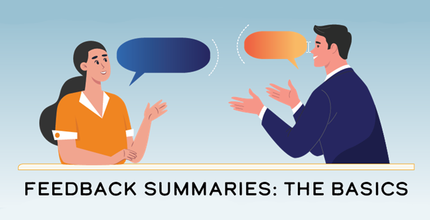 |
|---|
| While most coaching and feedback you receive should be timely and ongoing, there can be tremendous value in taking time to pause and "formally" consider your contribution and performance more broadly. "Formal" means your supervisor gethers 360 feedback, prepares a summary document and has aplanned and scheduled discussion with you. That's where the feedback summary comes in! 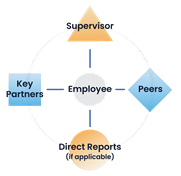 Your feedback summary involves a summary document and a discussion of your performance. Its purpose is to provide a reality-based view of how you're doing, help you realize your potential and motivate you to maximize your contribution to the team and organization's long-term success. Q: Why do we call it a "feedback summary" instead of a performance review? A: Because it should be a summary of the coaching and feedback you have received about your performance and contributions throughout a given period (typically the past year). Here are some important distinctions of the feedback summary compared to a traditional performance review: 1) It is not a performance rating or ranking exercise. 2) There is no universal, prescribed form. The document helps guide the most important aspect: the discussion. 3) It is not a compilation of all the feedback gathered. Supervisors are expected to use judgment to summarize and elevate the most important messages. Consider: Who can provide the most insightful and helpful feedback about your contributions this year? Share these names with your supervisor. Resources: Contribution Motivated When you are contribution motivated, you seek to discover, develop and utilize your abilities to succeed by helping others improve their lives. You are energized by creatively getting results which enables you to live a life of meaning. To be successful, we need employees who are motivated to maximize their contribution to organization’s long-term success, exemplify Our Values and have abilities that are additive to the team. |
| 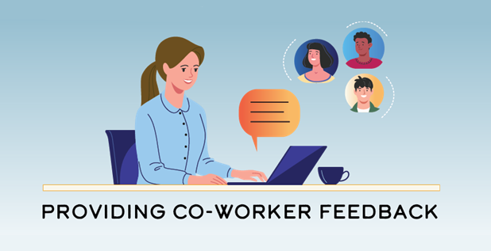 |
| Let's be honest... Every person has blind spots, and one way we learn about them is by having others be respectful enough to tell us about them. This gives each of us the best chance to learn, grow, and improve. When you are asked to provide feedback on a co-worker, consider the following tips: 1) Identify the few things that re most important for this employee to know. 2) Be clear, direct, and honest. 3) Provide current examples or context so the feedback is meaningful and helpful. 4) Share how the person applied PBM to achieve results. Consider... 4.1) What aspects of PBM does this person apply well? How does this lead to good results? 4.2) What aspects of PBM, if applied more consistently, would help this person achieve better results? 4.3) What is this person not doing or not doing well? This can sound like... 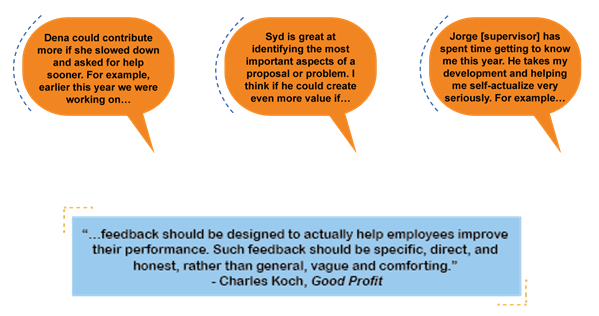 Resources: Coaching and Feedback Everyone Can Coach: We're all expected to seek and provide feeback - and even provide coaching when we can help others improve. Good coaches make the people around them better and more productive - and you don't have to be a supervisor to provide coaching! Feedback: Providing a reaction or response to a specific action, idea, or situation. Example: I think you should put a summary paragraph at the top of your recommendation. Coaching at Organization: Purposefully helping others so they can understand and apply our principle-based framework to realize their potential and maximize their contribution to the team and organization's long-term success. Example: I think you should put a summary paragraph at the top of your recommendation – to provide useful knowledge to the people who will review your proposal. I’d be happy to work with you to figure out the most essential information to include in it. Charles organization: "You can coach your teammates, your supervisor, and others around you to help them improve. And don’t forget that all of us have room to improve—even CEOs." A Principle-Based Approach It is important to understand the principles that inform our approach on coaching. Without this knowledge, misapplications often occur. Here are some common misapplications (Coaching is NOT...) and principles we strive to apply instead. 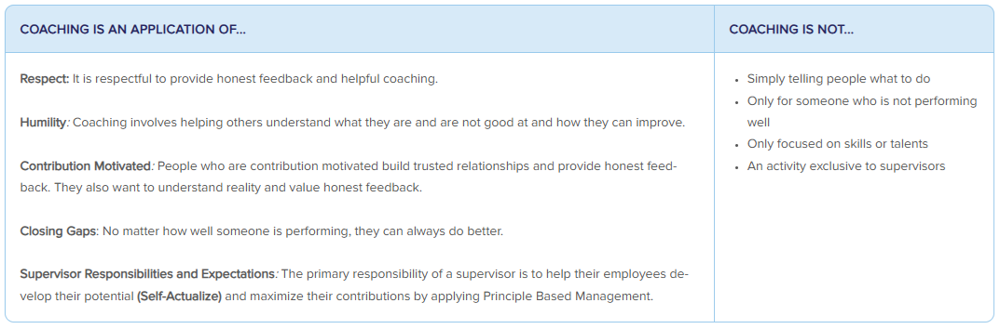 Examples: Offering Coaching While supervisors will do a lot of coaching, we are all expected to help one another improve. Here are some examples of what it might look like to coach... Your Supervisor: Rachel recently explained to her supervisor, Luis, that during team meetings he regularly offers ideas and suggestions before others have a chance. She uses specific examples to describe how his behavior often discourages others from offering challenge. Now, Luis is intentional about seeking ideas and challenge from others. A Coworker: Maria and Jake have worked together on the safety committee for about a year. Jake’s coaching has helped Maria sharpen her communication skills and improve her ability to provide direct, valuable feedback. Over time, she realizes that she really likes helping others develop, so she decides to pursue a supervisor role. Someone More Experienced: Ora is early in her career and Jing has been in sales for over 20 years. Ora notices that Jing is uncomfortable using their team’s new AI tool. She offers to help Jing learn to use it effectively. The two work together for several weeks until Jing is confident using the AI tool on her own. Someone You Don't Know Well: Reina needs to learn more about database management. She uses EverLearn to connect with Filip, who eagerly shares his knowledge and provides assistance as she learns. After a few coaching sessions, Reina gained enough knowledge to continue her learning using online resources. Filip offers to assist her if she has questions along the way. Demonstrating Courage: Uncomfortable Conversations People who are contribution motivated want to know if they are not doing well or if they are engaging in behavior that is problematic, yet people in the best position to provide that feedback and coaching often shy away from it. It is essential, especially for supervisors, to demonstrate courage and have uncomfortable or difficult coaching conversations. Here are a few tips: 1) Assume people want the truth and can handle it. 2) Address issues early because they typically get worse over time. 3) Approach the conversation with a “I want you to be successful” attitude and view this as an investment in the person. Example: Gianna joined the company a few months ago. She has a lot of valuable knowledge and experience that can really benefit the team, but the way she is engaging with co-workers and other teams is problematic. Her supervisor, Evan, schedules a meeting separate from their monthly one-on-one to address this with Gianna. He provides examples and clearly communicates the expectation for employees to live Our Values, especially Humility and Respect. Evan wants Gianna to be successful, so he invests in her development by coaching for behavior, not just skills. Examples: Receiving Coaching Responding productively to coaching is critical for your development. Being defensive, protectionist or resistant to change prevents you from growing and benefiting from coaching. When you are contribution motivated, however, you use principles to grow and improve. Humility One key aspect of reacting to coaching with humility is focusing on reality. For example, when you receive coaching and the coach needs more information, share it. This can sound like, “I’m flattered you think I can lead the team, but I really love doing hands-on engineering. I don’t think I’d like being the leader.” Another aspect of being coached with humility is reflecting, thinking about the actions you need to take and doing something with it. This might sound like,“In this upcoming meeting, can you pay attention to whether I’m speaking up enough? I’m trying to be more proactive about offering challenge.” Self-Actualize Coaching can help you discover, develop, and utilize your abilities to succeed by helping others improve their lives. This might sound like, "When you gave me feedback about how you saw me contributing, it really got me thinking. I do like project management, and I would like to pursue more opportunities there.” Changing Paradigms Coaching can help you identify when you need to change your paradigms – if you’re open to it. This might sound like, “Hmm, I do need to investigate how AI might impact how things are done in our industry” or “You’re right, I haven’t spent enough time staying connected to the most current processes. I’m going to explore more.” Transformation Coaching can highlight how you need to transform and guide you as you strive to transform. This can include: 1) Setting goals and having a coach who holds you accountable for milestones along the way. 2) Brainstorming ways to gain the skills and knowledge you need to transform. 3) Pointing out the progress you’re making. How is Coaching Related to Other Aspects of Employee Development? In many ways, coaching is what ties together the various aspects of our approach to employee development. Things like training, formal feedback and stretch opportunities are more effective when combined with on-going coaching and feedback. Cara Chennault-Reid, Vice President – Human Resources, organization: “You have to look at your entire team... and each individual is going to need something different.” Feedback Summaries What Are Feedback Summaries?: For years, we referred to employee assessments as “performance reviews” – and you may still hear that term – but we now call them “feedback summaries” because they should be a summary of the coaching and feedback you have received about your performance and contributions throughout a given period (typically the past year). Your feedback summary involves a summary document and a discussion of your performance. Its purpose is to provide a reality-based view of how you’re doing, help you realize your potential and motivate you to maximize your contribution to the team and organization’s long-term success. A Principle-Based Approach It is important to understand the principles that inform our approach to feedback summaries. Without this knowledge, misapplications often occur. Here are some common misapplications (Feedback Summaries are NOT...) and principles we strive to apply instead. 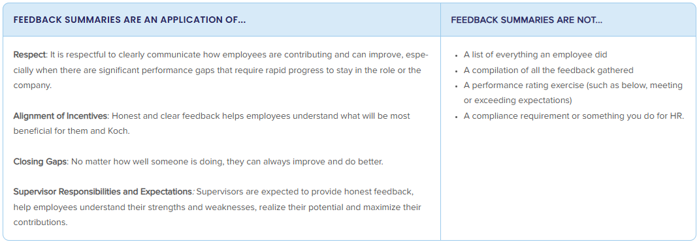 How Are Feedback Summaries Developed? Your supervisor will develop the written feedback summary and plan what to discuss with you by considering: 1) Ongoing discussions with you 2) Your contributions to your RRE, other results and culture 3) Feedback from others (sometimes called 360-degree feedback) 4) Your self-evaluation The written summary typically includes no more than a handful of your most significant contributions, 2-3 strengths and development areas and a forward-focused message about how you can improve contributions in the coming year(s). While a document is helpful, the feedback summary is about communication. The discussion is a chance to ask questions, connect to reality, explore what you could do differently in the future, and envision what you could do to better leverage your gifts to contribute more. Tips and Expectations Everyone is expected to take the feedback summary process seriously. Below are tips and expectations for each essential element of effective feedback summaries. Gathering 360 Feedback (Supervisors) Feedback should be gathered and shared throughout the year. For the annual feedback summary, a supervisor solicits feedback from a small number of people who interact with the employee in different ways to gain a more complete view of the employee’s performance. Here are some things to keep in mind when you gather and analyze 360 feedback: 1) Seek feedback from those who can provide insight to help the employee develop and improve. 1.1) Be thoughtful about the questions you ask. Customize questions to match the reviewer’s interaction and relationship with the employee. 1.2) Ask about the “how” (virtue and talents) and the “what” (results). 2) When gathering feedback from internal partners, peers and direct reports, consider having a conversation (1-on-1 or in a group) rather than only asking for written feedback. There is no specific number of feedback providers required. 3) Key partners could be internal or external customers, suppliers or others the employee works with closely. Rather than sending external partners feedback forms to be completed, have conversations to learn how the employee (and we as an organization) are doing and what needs to improve. 4) Analyze the feedback; look for patterns and themes. Determine and summarize the appropriate message; do not provide a compilation of all feedback. 5) The Motivations and Behaviors tool can help you assess ways in which the employee is and is not contribution motivated. Providing Feedback for Co-workers It is common to be asked by supervisors to provide feedback about the performance and contributions of their employees (your co-workers). Your feedback can help your co-workers discover their strengths and limitations, develop skills and apply them in ways that increase their contributions. Here are some things to keep in mind as you provide feedback: 1) Imagine you are receiving this feedback. What few things are most important to help this person? 2) Be clear, direct and honest. 3) Provide current examples or context so the feedback is meaningful and helpful. 4) Share how the person applied PBM to achieve results. Important note: Each of us is expected to provide helpful feedback to our co-workers (including our supervisor) on an ongoing basis, not just “at the end of the year.” Providing Your Self-Evaluation You can provide your self-evaluation to your supervisor in writing or through a conversation. Regardless of the approach you and your supervisor agree on, this is a formal opportunity for you to reflect and communicate with your supervisor about your contributions and experiences during the past performance period, as well as your thoughts on how you might contribute more or differently in the future. Here are some questions to consider as you prepare your self-evaluation: 1) What are my three most significant contributions? How did I apply PBM to achieve these results? 2) What is most fulfilling and least fulfilling in my role? 3) What area of development will help me realize my potential? 4) How would I change my role to better match my aptitudes and interests with the company’s needs? How Are Feedback Summaries Related to Other Aspects of Employee Development? Your feedback summary should help you reflect on your performance and how you’ve responded to coaching, understand how you’ve contributed to results and culture which affect your compensation, and spark ideas for how you might adjust your RREs. Contribution Motivated What is Contribution Motivated? When you are contribution motivated, you seek to discover, develop and utilize your abilities to succeed by helping others improve their lives. You are energized by creatively getting results which enables you to live a life of meaning. Motivations and Behaviors for Individual and Organizational Success is a key resource that contrasts contribution motivated with deficiency motivated. Why is This Important? To be successful, we need employees who are motivated to maximize their contribution to organization's long-term success, exemplify Our Values and have abilities that are additive to the team. We strive to hire and retain people who are contribution motivated first and foremost – and reinforce that motivation through individualized roles and responsibilities, coaching, development and rewards. Below is a tool that clearly articulates differences in thinking, behaviors, and attitudes between people who are primarily contribution motivated and the alternative - what we call being primarily deficiency motivated. We use this tool to help us provide feedback, select contribution motivated people, and advance our culture. Motivations and Behaviors For Individual and Organizational Success To be successful long term, we need employees who are motivated to maximize their contribution to the long-term success of organization Industries consistent with Principle Based Management and have the ability to help the team succeed. Rather than perfection, we expect employees to be predominantly contribution motivated rather than deficiency motivated. 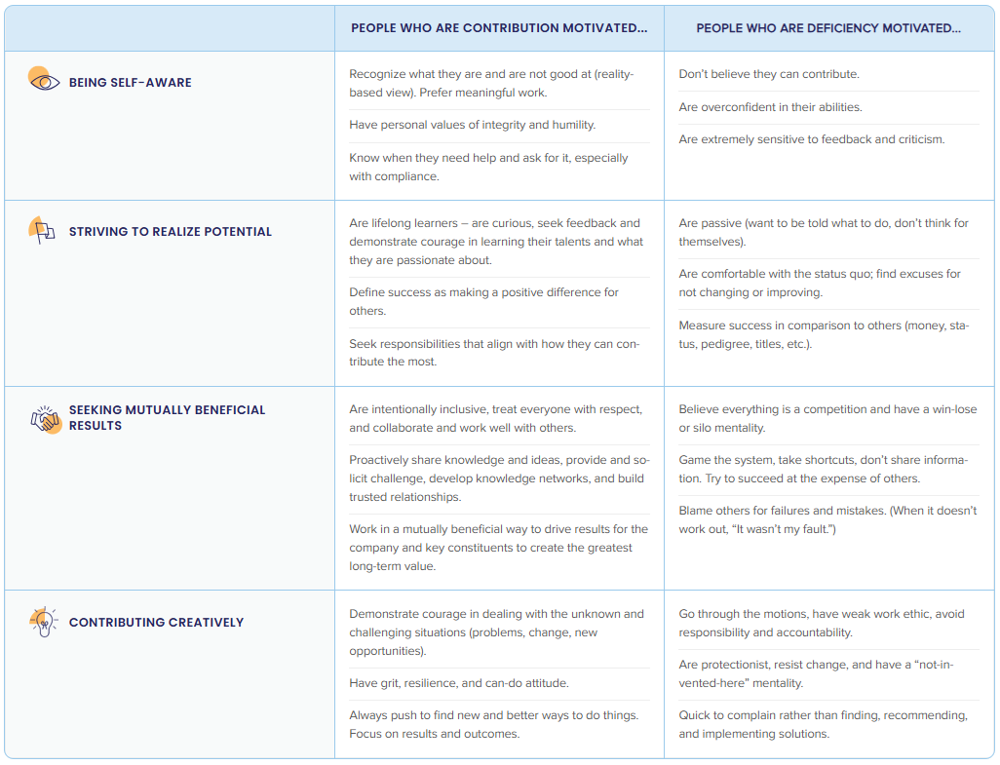 Principle in Brief: Contribution Motivated Personal success and fulfillment – in any field or endeavor – come from helping others in ways that are mutually beneficial. Alexis de Tocqueville called this acting out of an “enlightened regard for [oneself],” which “constantly prompts [people] to assist one another.” This principle of being contribution motivated has been vital to organization’s success. From Abraham Maslow it has become generally accepted that most individuals must first satisfy their basic physical needs and then their communal needs, as well as achieve a sense of self-worth. Individuals for whom any of these needs are seriously unfulfilled tend to be driven by them, which he called being deficiency motivated. In this state, people often act in unhelpful or even counterproductive ways, such as being defensive, resisting feedback, hoarding knowledge, undermining colleagues and complaining without offering solutions. Being contribution motivated enables people to discover, develop and utilize their abilities to succeed by helping others. They are energized by continuously trying to improve, innovate, transform and creatively get results – which enables them to live lives of meaning. The more people contribute, the better they feel about themselves and the more they tend to be rewarded, so the more they want to contribute. As difficult as it is for individuals to contribute when deficiency motivated, it is almost impossible when negatively or destructively motivated. They can be driven by tribalism; narcissism; the will to power; jealousy; a lack of integrity, humility, or respect for others; or the desire for vengeance for real or imaginary injustices. Organizations with a culture of negative motivation typically have no purpose other than advancing their own power or profiting by any means. This is why we prioritize a contribution-motivated culture – one based on Our Values. It involves hiring and retaining people who are first and foremost contribution motivated, and reinforcing that motivation through individualized roles and responsibilities, coaching, development and rewards. Examples These contrasting examples can help you better understand what it looks like when someone is contribution motivated. Hiring Contribution Motivated: During an interview, Ginny showed self-awareness. She described what she learned about herself in each job. Ginny admitted that she gets bored easily and often moves on once she's mastered something. She said she feels most energized when she can help her teammates and see the effect of their work. Deficiency Motivated: During an interview, Jorge showed he lacks self-awareness. He artfully talked about how managers in his previous jobs made it difficult for him. When asked about feedback he received, Jorge discounted his performance reviews and clearly believed his previous supervisors undervalued his abilities and achievements. Day-to-Day Work Contribution Motivated: Lee is an environmental engineer whose team recently finished a large project updating the facility's watershed and irrigation equipment. Lee proactively talks to his supervisor to discuss other ways to contribute. In the near term, he uses some of this "downtime" to get current on the newest water quality measures. Deficiency Motivated: Lana is a data analyst who recently finished automating measurement reports. She now has some "free time" while waiting for her supervisor to provide the next assignment. Lana uses the time to get caught up on her personal email and plays on her phone a lot. |
| As part of the 360 feedback process, your supervisor gathers feedback from various sources, including you. Your self-evaludation is not about documentation. 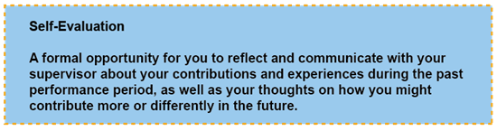 Here are some things to consider as you begin your self-evaluation: 1) Allow yourself enough time to achieve full benefit from this exercise. 2) Looking back through your calendar can help you reflect on what you've done and accomplished. 3) When identifying your key contributions, focus on the two or three that are the most significant. 4) Considering everything you worked on, what stands out? What insights do you have about what you really like (or don't like) to do? 5) What do you want your supervisor to know about your performance this past year and your ideas for the future? When done well, your self-evaluation prepares you to have a productive feedback summary discussion with your supervisor. Action to Consider: Your self-evaluation can be written, a discussion or both. Do you or your supervisor have a preference? Talk about it and decide together. |
| While it can be uncomfortable to receive feedback, especially about improvement opportunities, you get to choose how you react. You can use it to grow, improve and increase your contribution, or become argumentative, dismissive, or defensive. 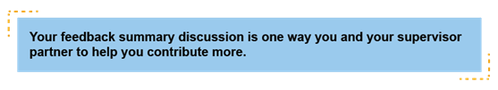 Here are a few tips for embracing the feedback you receive: 1) Allow the feedback summary discussion to help you see where you've been and inform you where you want to go. 2) Specific positive feedback can sometimes surprise you. Don't ignore or downplay it! Positive feedback helps you identify strengths and potential opportunities to contribute more in the future. 3) It's natural to wrestle with some of the feedback you receive (positive or negative), but all feedback is a gift. Even if you don't entirely agree, there is always something to learn. 4) Use feedback as an opportunity for you and your supervisor to revisit and potentially adjust your RREs. Real growth requires humility and openness, which can be difficult. Consider: 1) When you receive constructive feedback, what's your first inclination? How can you be more open to the message? 2) How can you work with your supervisor to act on the feedback you receive? 3) If you are a supervisor, how can you help each team member leverage their feedback (including positive feedback) to grow and improve>? Resources Roles, Responsibilities, and Expectations (RREs) Dave Robertson, Co-CEO and Vice Chairman of organization, Inc.: Good supervisors or leaders need to connect their employees to the vision, the strategies and the priorities of the business...[RREs] should be developed between supervisors and employees...to help guide what the employee works on. What are RREs? Role, Responsibilities and Expectations help you and your supervisor work together to ensure your ROLE is an individualized bundle of responsibilities and expectations that fit your aptitudes and interests and help you make the greatest contribution relative to others. RESPONSIBILITIES define what you “own” or take care of based on comparative advantage. You are held accountable for your responsibilities. Examples include products, services, assets, activities, employees, projects, systems, and processes. EXPECTATIONS focus on the desired outcomes rather than on the activities that might be required to produce those outcomes. They should be clear, specific, and, whenever possible, measurable. A Principle-Based Approach It is important to understand the principles that inform our approach to RREs. Without this knowledge, misapplications often occur. Here are some common misapplications (RREs are NOT...) and principles we strive to apply instead. 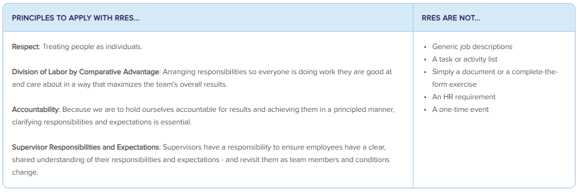 What Does Developing Your RREs Look Like? Fundamentally, developing RREs is a series of ongoing conversations with your supervisor. You will discuss and consider: 1) Your business/team vision and associated strategies, goals and objectives. 2) The nature of the work and what good looks like. 3) Your gifts, skills, interests, development opportunities and possible stretch assignments. 4) The gifts, skills and interests of other team members. While many people find it beneficial to summarize their RREs in a document, that’s not the primary goal. Creating a document without conversations and a shared understanding is wasteful. You might find the RRE Development Worksheet to be helpful as you work with your supervisor to define your responsibilities and expectations. 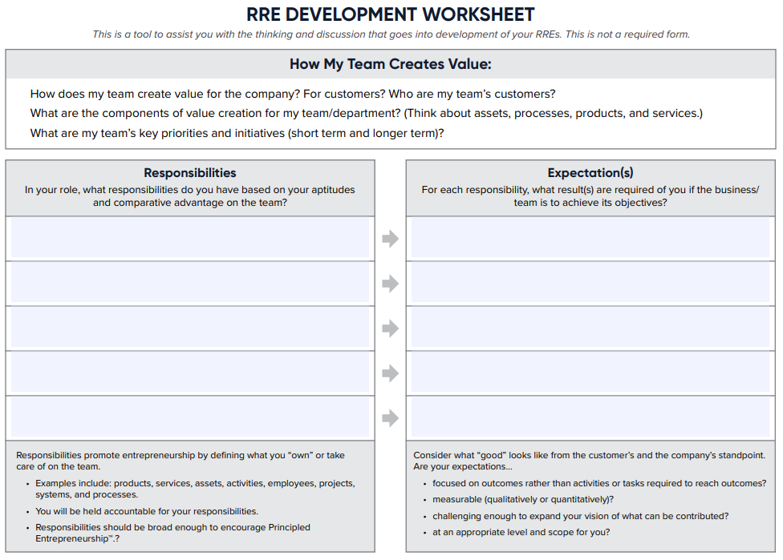 How Do You Use Your RREs? You should use your RREs to focus your efforts and increase your contribution by… 1) Understanding how your work contributes to business results 2) Prioritizing work and eliminating waste 3) Leveraging your gifts and demonstrating entrepreneurship 4) Exemplifying stewardship with the resources entrusted to you Examples: RRE Conversations Developing and using your RREs to focus and increase your contributions is an ongoing process – one that prompts you to adjust as conditions change. Here are a few examples of RRE conversations. Changes in Vision or Priorities: Developing and using your RREs to focus and increase your contributions is an ongoing process – one that prompts you to adjust as conditions change. Here are a few examples of RRE conversations. Someone Leaves the Team: Evelyn supervises the marketing team. An employee recently left the team, so Evelyn talks to each team member about how they might adjust their responsibilities. Each shares new responsibilities they want to take on and responsibilities they want to de-prioritize or give up completely. Evelyn takes time to consider everyone’s input and then works with each to adjust their RREs. Too Much Work: Remi’s work seems to come in waves – he's either slightly overwhelmed or completely overwhelmed. He talks to his supervisor about it, and she is surprised to learn how much Remi is doing when things are busy. Together they discuss different ways to smooth out the workload. While this is just the beginning of an ongoing conversation, Remi is pleased they’re working together to address it. Too Little Work: Fern gets done with her primary tasks quickly and is ready to do more, so she talks to her supervisor about taking on more responsibilities. They discuss various ideas, including a few stretch assignments, and decide to get back together next week after Fern considers what she is most interested in trying. How Are RREs Related to Other Aspects of Employee Development? RREs are one aspect of employee development—because each of us can develop through the work we are doing. All employee development activities have a purpose and are interrelated. |
| 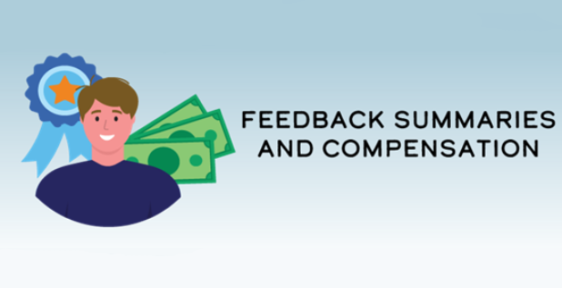 |
| People new to organization often wonder, "How does my feedback summary influence my pay?" When done well, you and your supervisor come out of the feedback summary process with a solid understanding of your contributions, which is a primary factor for determining compensation. 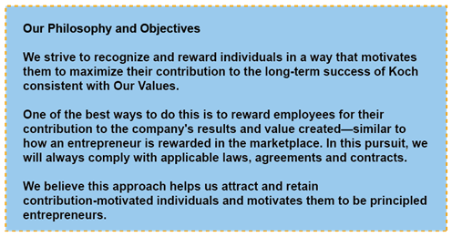 However, it's important to note that the connecttion between your feedback summary and your compensation is not formulaic. Our principle-based approach to pay requires your supervisor, leaders, and HR to use critical thinking and good judgment. Resources Our Approach to Compensation is Different Our approach to compensation IS different. When it comes to compensation, our approach is different from many other companies, and there's a simple reason for that. Our starting point is not the same. Many companies start by focusing on a role, and to determine the pay for that role they might use market data to see what other companies pay, or establish pay ranges by factoring in things like credentials, title, tenure and performance ratings. And, at the end of the year, any bonus or increase is a fixed percentage of base pay. It could be influenced by a performance rating, in which everything good and bad an employee does is somehow represented in a single number. Or perhaps by overall profitability, in which case it's just profit sharing and not related to the individual's performance at all. This type of approach is fast and easy. No judgment about the individual is required. While it might be efficient, it's not very effective in motivating employees to maximize their contribution to the long-term success of the organization. Here's how organization is different. Compensation recommendations begin by focusing on the individual, not the role. Instead of starting with pay ranges or market data, we look at the individual's contribution. So, for each individual, we consider: how did they contribute to results - both long-term results and this year's results? Did they find new and better ways to do things, or were they comfortable with the status quo? How did they contribute to our culture? By being contribution motivated and exemplifying our values? Did they help their teammates get better results, or were they difficult to work with and avoid responsibility or blame others when things didn't go well? How did they help others create value? Did they grow organization's knowledge networks, develop capability or help drive transformation? Or did they make it harder for others to get results? All of this together helps us determine an employee's total contribution. And then their total compensation; which includes base pay, bonuses or other incentives. Our approach begins with treating every person as an individual, and requires good judgment and economic thinking. Sure, other approaches are easier, but when we do this well it's worth it. It's good for employees, because they're rewarded for their total contribution. And it's good for organization because employees are motivated to contribute more. It's a win-win! |